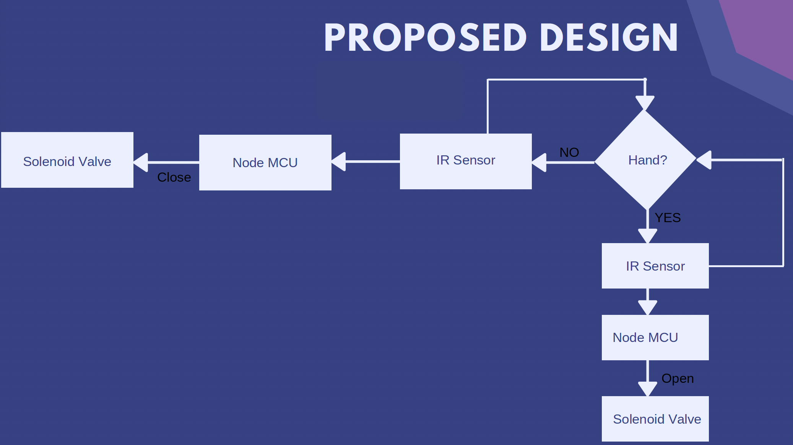
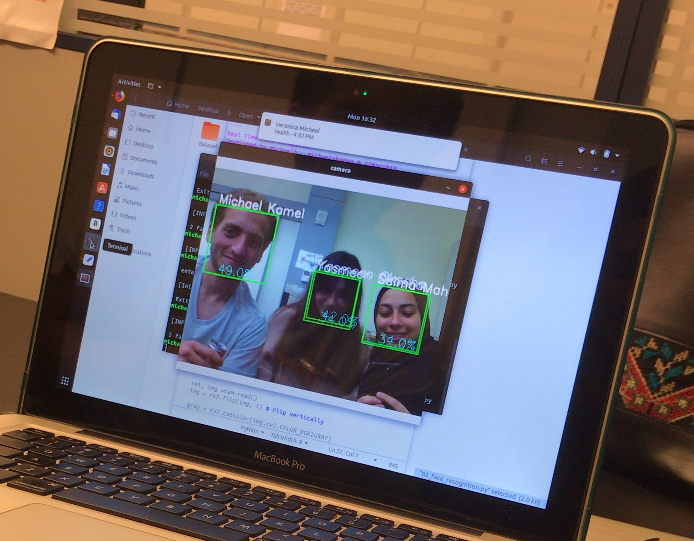
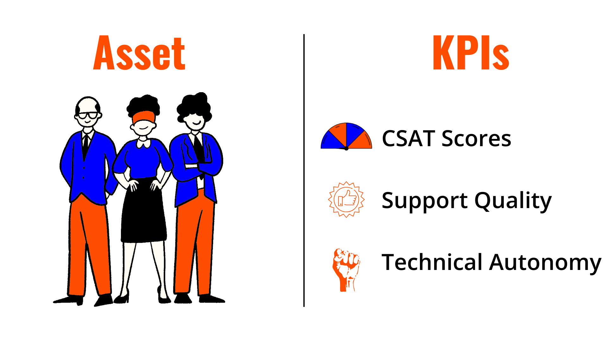

Growing up I realized that one of the most interesting creatures to observe are humans. That's why my decisions & way of thinking is usually human centric. Below are my favorite projects that showcase this approach.
Academic Course - Group Work
Water is the most crucial element in our lives, it is the basics of everything. Among one of the poorly managed resources in the domestic environment is water. This led to the introduction of sensor-operated taps which are usually present in newer buildings. The older buildings, however, remain operating with the regular taps. This happens due to the high cost of implementing new taps to existing structures and the hassle involved in doing so. That is what we aimed to overcome by our product, the Smart Tap.
Water Conservation - Convenience & Hygiene
Electric solenoid valve, IR sensor, Microcontroller (Node MCU), Rechargeable battery, Resistor, Power transistor, Diode
A simple item that is inserted in any water tap and turn into a smart tap, sensing the presence of a hand below that tap, if it senses a motion it will open the valve allowing the pass of water, if no hand it will close the valve and preventing any flow of water.
Thesis Project - Group Work
Use our knowledge to create a solution that helps our community.
Public schools in Egypt is a chaos, there are many obstacles that obscure the learning process.
A system based on having an FPGA in every classroom. This FPGA performs facial recognition using OpenCV software to take attendance. The FPGA utilizes the open source resources provided by OpenCV to perform functionalities that are not limited to facial detection & recognition but also attention detection and emotional status. In addition, the system processes readings from different analog and digital sensors to monitor the classroom environment This is done using ADC or digital connections on the FPGA itself.
The video is showing the demo of the sensors system on the FPGA using VHDL language.
FPGA, Analogue Light Sensor, Digital Sensor
Face detection & recognition test
Being a Team Leader for Level 1 Support Team for a year & half - almost a new team - I had to work on developing team strategy & enhancing the support process.
I'm still kicking off this part of my career, so I have achieved simple tasks. To see those tasks you can visit my GitHub page. To know about my intentions for this part of my career, you can wait till chapter 4.
Github